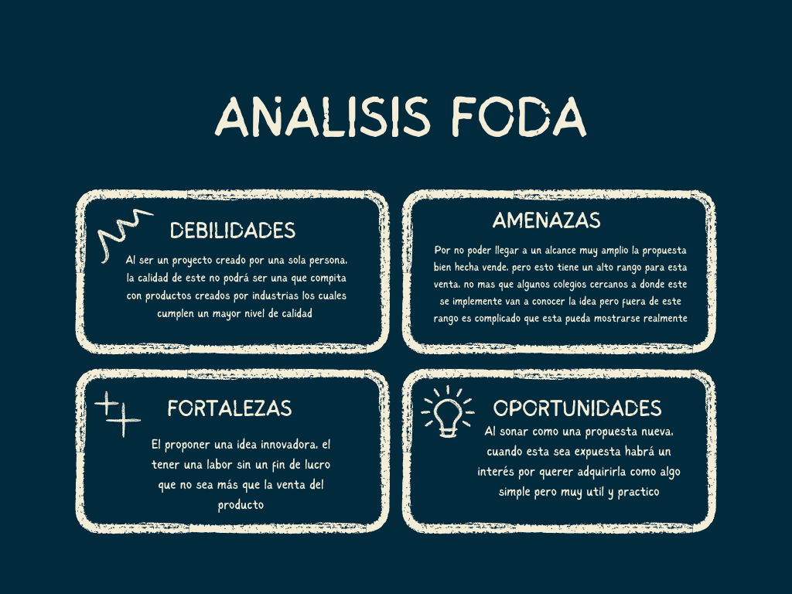
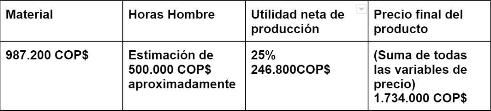

Capitulos
Las bases de este proyecto se dan escriben es los distintos capitulos que conforman
el libro de sustentacion, en el siguiente apartado se hará un resumen de la informacion
recolectada en el libro
Capitulo 1:problema de investigacion
El tener presente el tema de reciclaje en la actualidad como
un tema de interes ha cambiado la manera en que vemos las basuras
que producimos y con esto han venido soluciones que han sido mucho
de practica, de ver si las personas logran seguir el consejo
que se dice que hagan, pero esto se ha demostrado en no ser muy util
para solucionar lo que propone, de cierta manera un metodo manual no muestra resultado.
ㅤㅤㅤㅤㅤㅤㅤㅤㅤㅤㅤㅤㅤㅤㅤㅤㅤㅤㅤㅤㅤㅤㅤㅤㅤㅤㅤㅤㅤㅤㅤㅤㅤㅤㅤㅤㅤㅤㅤㅤㅤㅤPanoramas similares a este se viven en los colegios de
Colombia donde no vemos nada similar a un tratamiento o un reciclaje
lo que puede traer serios problemas al medio ambiente a largo plazo
Objetivo General
Crear un nuevo sistema/circuito electrico para el tratamiento de
basuras aprovechables en el instituto,para un aprovechamiento de los mismo,para evitar ver situaciones como estas
donde los trabajadores tienen que separar las basura para que estas
sean reutilizadas en el recilaje

-Inventar un metodo de tratamiento util desde la automatizacion de
este proceso para un uso cotidiano en el que se puede ayudar
a un problema como el de la contaminacion ambiental
-Conocer como funcionan los componentes de un sensor,
esto con el fin de poder entender como se pueden crear,
maquinas automaticas modernas, que usan el movimiento sensorial
para poder dar señales y asi ejecutar cadenas reaccionarias que
dan funcionamiento a las maquinas complejas automaticas
-Determinar como afectan la mal separacion de basuras en los espacios
cercanos y los no tanto, de porque estos deben ser mejorado, no eliminados,
cambiados o empeorados, de como estos son utiles y a traves del cambio pueden ser mejores
Capitulo 2:Marco teorico
Reducción: El proceso de reducción de desechos mediante el reciclaje de desechos desechables en nuevos materiales que se pueden reutilizar. Esto es muy apreciado ya que es un material abundante y reciclarlo correctamente presenta una gran oportunidad para ayudar al medio ambiente y una gran oportunidad para venderlo a los recicladores.
conciencia
Tenga cuidado de recordar al consumidor para que tenga la capacidad de no cometer errores. Esto muestra en la práctica cómo las personas deben prestar atención y tener más cuidado con la forma en que se eliminan los desechos en el medio ambiente y cómo ellos mismos eliminan estos desechos en su propio entorno, prestando atención a cómo hacerlo correctamente.
Precaucion
El desecho es lo que el consumidor le hace a su producto de consumo, esto comienza desde el momento en que el consumidor es dueño de su producto y sabe a qué contenedor va cada uno, el desecho también es un desecho que le da una segunda vida al plástico, es decir, muy importante, porque demuestra que en el principal proceso de reciclaje es principalmente el procesamiento
sistema
Un sistema es un conjunto de circuitos diseñados en el espacio de la papelera para una mayor versatilidad y programados para distinguir entre los diferentes elementos de desecho para que sepa cómo reciclarlos de forma automatizada.
El tratamiento es el cual da el consumidor a su producto consumido, esto se empieza desde que el consumidor tiene su producto y sabe a que caneca va respectivamente cada uno, tratamiento también es aquel que le da una segunda vida útil a un plástico, esto es muy importante porque demuestra que lo principal de todo el proceso principal del reciclaje es el tratamiento.
MARCO LEGAL
-DECRETO 1713 DE 2002
Este decreto dicta que los residuos deben permanecer en un recipiente o depósitos los cuales estén destinados con este propósito, esto para una recuperación de los residuos y un posterior reciclaje, esto se hace para mantener un ambiente público limpio y una futura comercialización de estos residuos para un aprovechamiento total
-LEY 1259 DE 2008
Esta ley es una infracción económica y pedagógica al no tratar correctamente los desechos, esto para crear una cultura ciudadana correcta y con esto incentivar a las personas a seguir correctamente los códigos de tratamiento y así mantener un ambiente limpio en los espacio, uno más correcto para lo que se busca dentro del mismo. Además que en el artículo 2 se logra dar una definición más amplia sobre los desechos y cómo se deben llamar y clasificar dichos residuos
-LEY 1252 DE 2008
Esta nos describe como dentro del territorio nacional todos los materiales reciclados deben ser exportados esto con el propósito de mantener mínimo el número de residuos que terminan siendo de un solo uso especialmente dentro del territorio nacional y también la eliminación responsable de las existencias de estos dentro del país
-DECRETO 2412 DE 2018
Que las actividades de aprovechamiento y tratamiento de residuos sólidos buscan reducir la cantidad de residuos dispuestos en rellenos sanitarios por sus significativos beneficios sociales, ambientales y económicos.
-artículo 88 de la Ley 1753 de 2015
creó el incentivo al aprovechamiento de residuos sólidos en aquellas entidades territoriales en cuyo Plan de Gestión Integral de Residuos Sólidos (PGIRS) se hayan definido proyectos de aprovechamiento viables
Capitulo 3:Metodología
La tecnica de investigacion utilizada para este proyecto es una metodologia mixta, la cual se basa en el estudio de los numeros de basuras producidas por un estudiante promedio pero tambien trabajamos en base a la opinion y el conocimiento del estudiante acerca del tratamiento de basuras para poder sustentar mas la idea de la investigacion

La investigacion llevada a cabo se va a realizar dentro
del instituto, esta piensa utilizar estudiantes de noveno
,estos por tener el modelo de estudiante mas adecuado, este tendra
que consumir de manera comun la basura que producé y tirarla en la caneca
con esto el sistema lo seprara de manera automatica. Esta basura termina reciclada
y util para su reuso
Capitulo 4:Marco tecnico
Vision
Una expansión del producto, el poder tener en más escuelas, a más espacios en los que este pueda ayudar cumpliendo el propósito con su sistema pero a la vez también que este genere un apoyo económico al colegio que lo decida implementar, pagando unicamente un unico precio inicial por la caneca y así generando la ganancia económica pero también el apoyar al cuidado del ambiente
Mision
Integrar al instituto un sistema automático para la separación de residuos con el fin de lograr tener un ambiente sano y a la vez tener los residuos bien separados sin la necesidad de una intervención o un código de colores, solamente exigiendo un uso de la caneca para cumplir con esta función y así los propósitos que se quieren son los cumplidos y con esto apoyar al cambio de cómo se trata, como se cuida el plástico y como este puede ser utilizado y utilizarlo también para el beneficio de todos
"UN PEQUEÑO CAMBIO PARA UN GRAN RESULTADO"

DESCRIPCION GRUPO FOCAL
Esta población está establecida en el colegio este es escogido por el análisis realizable y por tener las características de ser personas que no comprenden totalmente la importancia del tratamiento de las basuras y que no lo comprenden del todo el funcionamiento de esta separación .Serán particularmente estudiantes del grado noveno por ser este el grado más apropiado para el estudio no siendo los mayores de los grados lo cuales saben el deber del tratamiento pero no la suficiente responsabilidad para hacerlo la totalidad del tiempo.
Esta comunidad educativa presenta una creación del basura la cual debe ser tratada; este es el problema planteado ahora la razón de esta selección de población, por ser un grado con la enseñanza de este tratamiento, pero sin la responsabilidad o practica de como realizar el tratamiento correctamente, por eso para el proyecto del sistema separador se los elige, para que haya una producción igual a la anterior pero ahora separada correctamente
Capitulo 5:Presupuesto

.jpg)
.jpg)
.jpg)